A B-tree $T$ is a rooted tree having the following properties:
- All leaves have the same depth, which is the tree's height $h$.
- For any non leaf node, the number of children is one greater than the number of keys in that node.
- Nodes have lower and upper bounds on the number of keys they can contain. We express these bounds in terms of a fixed integer $t\geq2$ called the minimum degree of the B-tree:
- Every node other than the root must have at least $t-1$ keys. Every internal node other than the root thus has at least $t$ children. If the tree is nonempty, the root must have at least one key.
- Every node may contain at most $2t-1$ keys. Therefore, an internal node may have at most $2t$ children. We say that a node is full if it contains exactly $2t-1$ keys.
The keys in a B-tree are sorted in a similar fashion to BSTs. Consider a node $x$ with $c$ children. Let's say that $x$ has keys $k1<k2<...<k_c$.
Searching a B-tree
Searching a B-tree is much like searching a binary search tree, except that instead of making a binary branching decision at each node, we make a multiway branching decision according to the number of the node's children.
The following figure demonstrates the procedure for finding the key $47$ in a B-tree.
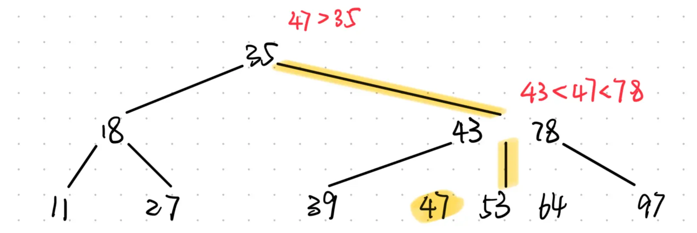
Inserting a key into a B-tree
As with binary search trees, we search for the leaf position at which to insert the new key. With a B-tree, however, we cannot simply create a new leaf node and insert it, as the resulting tree would fail to be a valid B-tree. Instead, we insert the new key into an existing leaf node. Since we cannot insert a key into a lead node that is full, we introduce an operation that splits a full node
y(having $2t-1$ keys) around its median keyy.key[t]into two nodes having only $t-1$ keys each. The median key movies up intoy's parent to identify the dividing point between the two new trees. But ify's parent is also full, we must split it before we can insert the new key, and thus we could end up splitting full nodes all the way up the tree.
The next graph shows the results of inserting the keys F, S, Q, K, C, L, H, T, V, W, M, R, N, P, A, B, X, Y, D, Z, E in order into an empty B-tree with minimum degree $2$.
Inserting A, B, X.
 
Inserting
Inserting Z, E.
